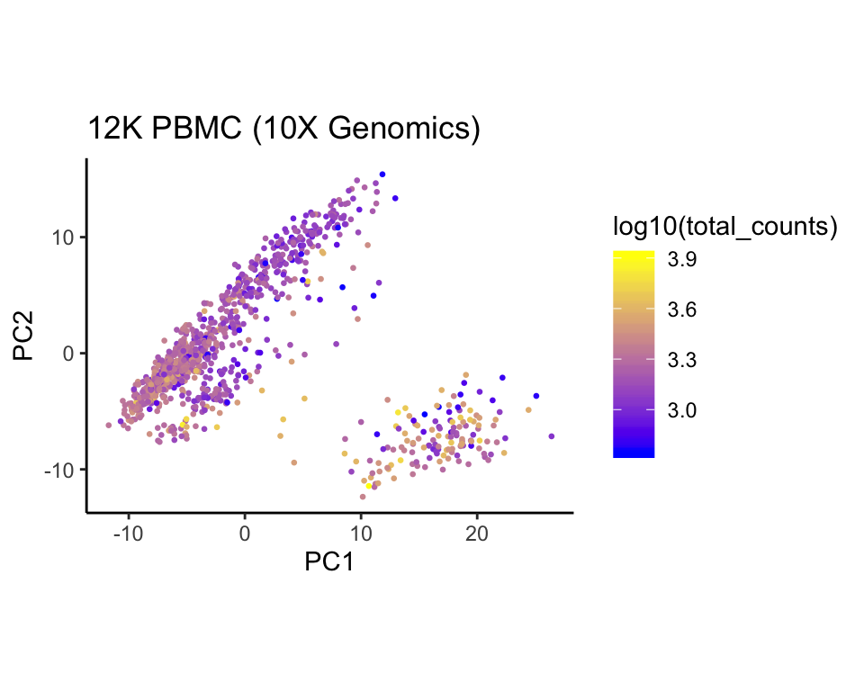
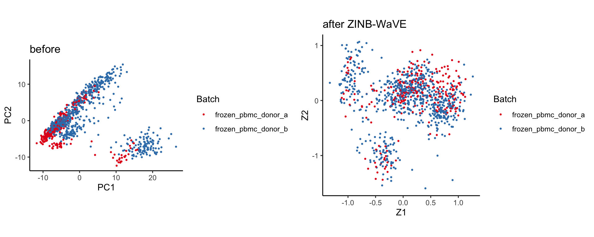

Single-cell data analysis
Davide Risso, Wolfgang Huber
10 Oct 2019
Single-cell signal is noisy
Single-cell data let us ask new questions
Single-cell data meet big data
Single-cell meet big data


A typical workflow


The SingleCellExperiment class

The SingleCellExperiment class
Single-cell RNA-seq data from PBMC cells, generated by 10X Genomics (see .Rmd file for details)
## class: SingleCellExperiment
## dim: 3079 1000
## metadata(1): log.exprs.offset
## assays(2): counts logcounts
## rownames(3079): ENSG00000188976 ENSG00000187608 ...
## ENSG00000198727 ENSG00000220023
## rowData names(12): ENSEMBL_ID Symbol_TENx ... total_counts
## log10_total_counts
## colnames(1000): Cell1 Cell2 ... Cell999 Cell1000
## colData names(56): Sample Barcode ...
## pct_counts_in_top_200_features_mito
## pct_counts_in_top_500_features_mito
## reducedDimNames(2): PCA zinbwave
## spikeNames(0):
Bulk vs single-cell RNA-seq

Zero-inflated Gamma Poisson to the rescue?
For \(\pi\in[0,1]\), the density of the zero-inflated Gamma-Poisson distribution is given by
\[
f_{\text{ZIGP}}(y;\mu,\theta, \pi) = \pi \delta_0(y) + (1 - \pi) f_{\text{GP}}(y;\mu,\theta), \quad \forall y\in\mathbb{N},
\]
where \(\delta_0(\cdot)\) is the Dirac function.
Here, \(\pi\) is interpreted as the probability that a \(0\) is observed instead of the actual count (“dropout”), resulting in an inflation of zeros compared to the GP distribution.
Single-cell RNA-seq read counts
Naught all zeros in sequence count data are the same
- “…, we find that zero-inflated models … tend to inflate parameter estimates … due to inherent identifiability issues.”
- “… this parameter inflation can be so severe as to dominate the results of a differential expression analysis…”
- “We find that simpler sampling models are well equipped to perform inference in situations dominated by sampling and biological zeros.”
Silverman, Roche, Mukherjee, David. doi: http://dx.doi.org/10.1101/477794
Quality Control and Filtering

Quality Control and Filtering
Exploratory data analysis (EDA) and quality control (QC) are of utmost importance in genomics.
With single cell data we have the luxury of having a large number of samples, hence we can filter out low quality cells as well as poorly sampled (=measured) genes.
There are some simple metrics that we can compute.
NB: what is quality?
Identifying empty droplets
Normalization

Normalization
As with bulk RNA-seq, it is important to account for the differences in sequencing depth and the other biases that may affect the expression levels.
Bulk RNA-seq normalization methods do not always work
Pooling across cells helps
Model-based approach
An alternative is to include normalization as a parameter of the statistical model.
This has the advantage of propagating the uncertainty in the estimation of the scaling factors.
This is the approach of the BASiCS and zinbwave Bioconductor packages.
Dimensionality reduction

Dimensionality reduction
Dimensionality reduction is useful for two related goals
- Visualize high dimensional data (usually in two dimensions)
- Infer low-dimensional structures from high dimensional data (1–50 dimensions)
Sample quality effects visualized by PCA
df = tibble(
PC1 = reducedDim(sce, "PCA")[, 1],
PC2 = reducedDim(sce, "PCA")[, 2],
Batch = sce$Sample,
`log10(total_counts)` = sce$log10_total_counts,
total_genes = sce$log10_total_features_by_counts)
ggplot(df, aes(x = PC1, y = PC2, color = `log10(total_counts)`)) +
geom_point(size = .5) + scale_color_continuous(low = "blue", high = "yellow") +
ggtitle("12K PBMC (10X Genomics)") + coord_fixed()

The ZINB-WaVE model
\(Y_{ij}\): count of gene \(j\) (for \(j=1,\ldots,J\)) for sample \(i\) (for \(i=1,\ldots, n\)).

ZINB-WaVE adjusts for batch effects
gridExtra::grid.arrange(
pca2 + ggtitle("before"),
tibble(Z1 = reducedDim(sce, "zinbwave")[,1],
Z2 = reducedDim(sce, "zinbwave")[,2],
Batch = sce$Sample) %>%
ggplot(aes(x = Z1, y = Z2, color = Batch)) +
geom_point(size = .5) + scale_color_brewer(palette = "Set1") +
ggtitle("after ZINB-WaVE") + coord_fixed(),
ncol = 2)

GLM-PCA
In droplet-based data, it might be safe to ignore zero inflation.
We could use a simpler “NB-WAVE” model.
Alternatively, we can exploit the fact that the Gamma-Poisson distribution (with known dispersion) belongs to the exponential family.
The GLM-PCA method is a generalization of PCA for the exponential family.
Townes et al. (2019) propose a fast approximation to GLM-PCA based on deviance residuals that is much faster than ZINB-WAVE and gives comparable results: CRAN package glmpca, bioR\(\chi\)iv https://doi.org/10.1101/574574
Approximate PCA
Even regular PCA is not scalable enough to very large datasets (millions of cells) and approximations are needed.
The BiocSingular package provides implementations of the random PCA algorithm and the implicitly restarted Lanczos bidiagonalization algorithm (IRLBA).
Lineage Inference

Motivation

Motivation

Motivation

The slingshot algorithm
Street, Risso, …, Purdom, Dudoit (2018). Slingshot: cell lineage and pseudotime inference for single-cell transcriptomics BMC Genomics, 477 https://doi.org/10.1186/s12864-018-4772-0 : slingshot package on Bioconductor
Start from a representation of the cells in some space defined by their gene expression (usually after dimensionality reduction - NB: horseshoes lecture). Suppose we identified \(K\) clusters.
- Identification of lineages
- treat clusters as nodes in a graph
- draw a minimum spanning tree (MST) between the nodes
- lineages are ordered sets of clusters
- semi-supervised: set the starting cluster (root of the tree) and optionally a set of known end points (leaves)
- Draw a “smooth” path through the lineages
- use of principal curves (Hastie and Stuetzle, 1989)
- shrink curves together in shared paths (simultaneous principal curves)
- project each cell onto the principal curve(s) to infer pseudotime
The slingshot algorithm

The slingshot algorithm

The slingshot algorithm

The slingshot algorithm

The slingshot algorithm

Shape-sensitive distance
Constructing an MST involves specifying a distance measure between nodes.
A Mahalanobis-like distance, i.e., a covariance-scaled Euclidean distance, that accounts for cluster shape, works well in practice.
\[
d^2(\mathcal{C}_i,\mathcal{C}_j) \equiv (\bar{X}_i - \bar{X}_j)^T (S_i + S_j)^{-1} (\bar{X}_i - \bar{X}_j),
\]
Biological meaningful supervision
Slingshot allows two forms of supervision during lineage identification:
- initial state (root)
- terminal states (leaves)
Like other methods, Slingshot requires the user to identify the initial cluster or root node.
Slingshot optionally allows the specification of terminal cell states, imposing a local constraint on the MST algorithm.
Simultaneous Principal Curves
To allow for multiple lineages, we modify the principal curves algorithms in two ways:
The shrinkage is performed by first recursively constructing an average curve for each branching event, then recursively shrinking the branching lineage curves toward this average.
Acknowedgements
Davide Risso (University of Padova)
Twitter: Github:

Random fortune cookie
I wish to perform brain surgery this afternoon at 4pm and don’t know where to start. My background is the history of great statistician sports legends but I am willing to learn. I know there are courses and numerous books on brain surgery but I don’t have the time for those. Please direct me to the appropriate HowTos, and be on standby for solving any problem I may encounter while in the operating room. Some of you might ask for specifics of the case, but that would require my following the posting guide and spending even more time than I am already taking to write this note. – I. Ben Fooled (aka Frank Harrell) R-help (April 1, 2005)